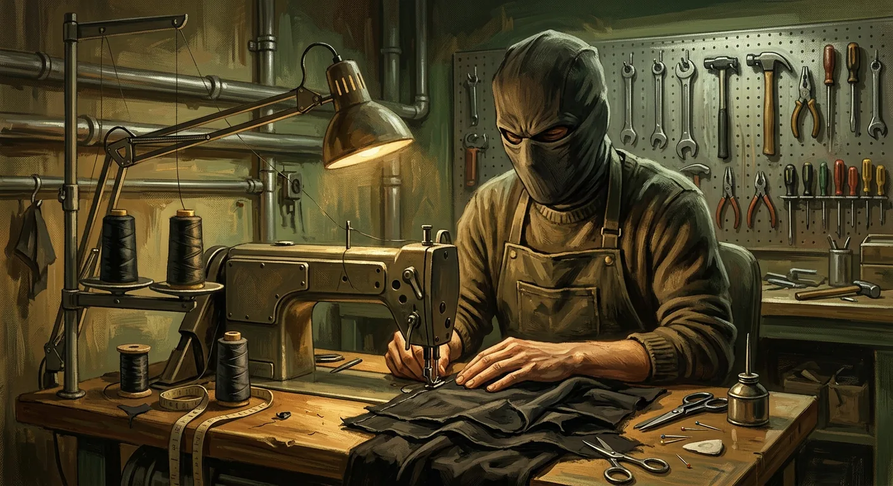

Banbaria (Paikpara), Sirajganj Sadar
Sirajganj, Bangladesh · Performer
A Story of Dreams, Courage & Determination
Meet Mohammad Al Mamun, the Bangladeshi performer known publicly as Banglar Krrish. Discover the story behind his superhero-inspired identity, dedication to physical performance, and journey from Sirajganj to wider public attention.
The hero image is an AI-generated illustration of a fictional masked performer. It is not a photograph.
Introduction to Banglar Krrish
Banglar Krrish is the public name used for Mohammad Al Mamun, who works as a pipe-fitting worker in Sirajganj. Inspired by the fictional superhero Krrish, he began sharing stunt and parkour videos on social media. Several news outlets reported on his story in October 2026.

Biography highlights
Pipe-fitting and stainless-steel / iron fabrication
Around 8–10 years of training, though reports vary
The fictional superhero Krrish
Personal journey timeline
The story of Mohammad Al Mamun, known as Banglar Krrish. It is based on public media reports and his own statements, with links to each source.
- Childhood
Grew up watching Krrish films and developing an interest in fitness, somersaults and acrobatics.
- Early practice
Practised stunts in ordinary clothes and taught himself from online videos. Early posts drew little response.
- The costume
Adapted an old black burqa belonging to his sister into a costume and mask inspired by Krrish.
- Going viral
Videos spread on Facebook and YouTube, and many people began calling him 'Banglar Krrish'.
- October 2026
Multiple news outlets published reports on his story between 8 and 15 October 2026.
Featured videos
Public YouTube videos about Banglar Krrish. Each one plays on this site. The channels named are the original publishers.
Independent press coverage
Reports from independent outlets. Each link goes to the original article.
AI-generated illustrative gallery
Illustrations made with AI and inspired by parkour and superhero themes. They are not photographs of Mohammad Al Mamun and do not show any real event.
Official social-media links
Official accounts appear here once they have been verified and added to the site configuration.
Contact & collaboration
For interviews, collaborations or media enquiries, use the contact form.
This site is hosted on GitHub Pages, which cannot receive form submissions. Pressing the button opens your email app with the message ready. Nothing is sent until you press send in your email app. You need an email app or webmail set up on your device.